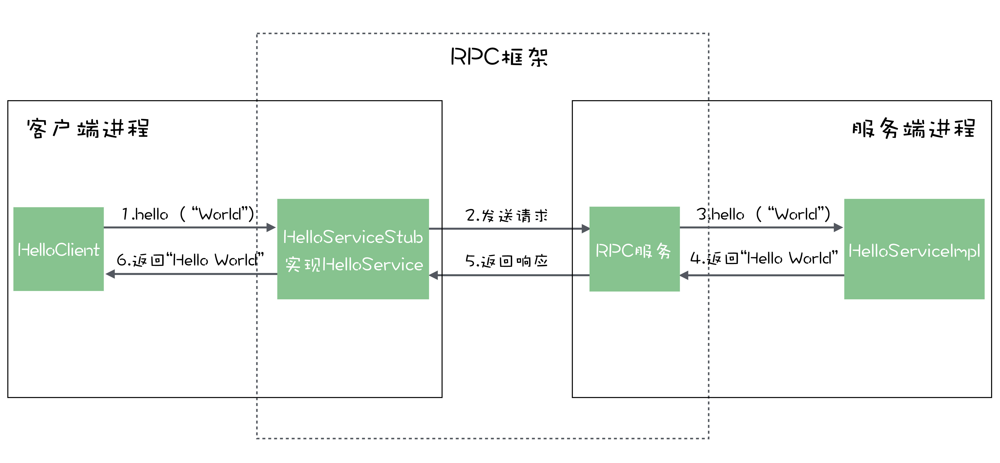
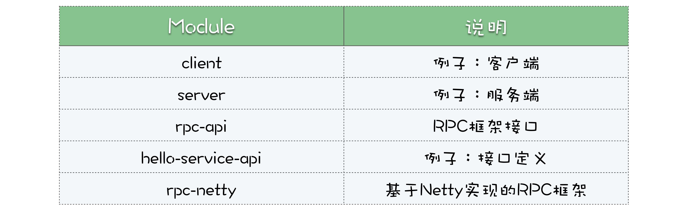

- 00 开篇词 优秀的程序员，你的技术栈中不能只有“增删改查”.md.html
- 00 预习 怎样更好地学习这门课？.md.html
- 01 为什么需要消息队列？.md.html
- 02 该如何选择消息队列？.md.html
- 03 消息模型：主题和队列有什么区别？.md.html
- 04 如何利用事务消息实现分布式事务？.md.html
- 05 如何确保消息不会丢失.md.html
- 06 如何处理消费过程中的重复消息？.md.html
- 07 消息积压了该如何处理？.md.html
- 08 答疑解惑（一） 网关如何接收服务端的秒杀结果？.md.html
- 09 学习开源代码该如何入手？.md.html
- 10 如何使用异步设计提升系统性能？.md.html
- 11 如何实现高性能的异步网络传输？.md.html
- 12 序列化与反序列化：如何通过网络传输结构化的数据？.md.html
- 13 传输协议：应用程序之间对话的语言.md.html
- 14 内存管理：如何避免内存溢出和频繁的垃圾回收？.md.html
- 15 Kafka如何实现高性能IO？.md.html
- 16 缓存策略：如何使用缓存来减少磁盘IO？.md.html
- 17 如何正确使用锁保护共享数据，协调异步线程？.md.html
- 18 如何用硬件同步原语（CAS）替代锁？.md.html
- 19 数据压缩：时间换空间的游戏.md.html
- 20 RocketMQ Producer源码分析：消息生产的实现过程.md.html
- 21 Kafka Consumer源码分析：消息消费的实现过程.md.html
- 22 Kafka和RocketMQ的消息复制实现的差异点在哪？.md.html
- 23 RocketMQ客户端如何在集群中找到正确的节点？.md.html
- 24 Kafka的协调服务ZooKeeper：实现分布式系统的“瑞士军刀”.md.html
- 25 RocketMQ与Kafka中如何实现事务？.md.html
- 26 MQTT协议：如何支持海量的在线IoT设备.md.html
- 27 Pulsar的存储计算分离设计：全新的消息队列设计思路.md.html
- 28 答疑解惑（二）：我的100元哪儿去了？.md.html
- 29 流计算与消息（一）：通过Flink理解流计算的原理.md.html
- 30 流计算与消息（二）：在流计算中使用Kafka链接计算任务.md.html
- 31 动手实现一个简单的RPC框架（一）：原理和程序的结构.md.html
- 32 动手实现一个简单的RPC框架（二）：通信与序列化.md.html
- 33 动手实现一个简单的RPC框架（三）：客户端.md.html
- 34 动手实现一个简单的RPC框架（四）：服务端.md.html
- 35 答疑解惑（三）：主流消息队列都是如何存储消息的？.md.html
- 加餐 JMQ的Broker是如何异步处理消息的？.md.html
- 结束语 程序员如何构建知识体系？.md.html
- 捐赠
31 动手实现一个简单的RPC框架（一）：原理和程序的结构
你好，我是李玥。
接下来的四节课，我们会一起实现一个 RPC 框架。你可能会问，为什么不实现一个消息队列，而要实现一个 RPC 框架呢？原因很简单，我们课程的目的是希望你能够学以致用举一反三，而不只是照猫画虎。在之前的课程中，我们一直在讲解消息队列的原理和实现消息队列的各种技术，那我们在实践篇如果再实现一个消息队列，不过是把之前课程中的内容重复实现一遍，意义不大。
消息队列和 RPC 框架是我们最常用的两种通信方式，虽然这两种中间系统的功能不一样，但是，实现这两种中间件系统的过程中，有很多相似之处，比如，它们都是分布式系统，都需要解决应用间通信的问题，都需要解决序列化的问题等等。
实现 RPC 框架用到的大部分底层技术，是和消息队列一样的，也都是我们在之前的课程中讲过的。所以，我们花四节课的时间来实现一个 RPC 框架，既可以检验你对进阶篇中学习到的底层技术掌握的是不是扎实，又可以学到 RPC 框架的实现原理，买一送一，很超值。
接下来的四节课，我们是这样安排的。本节课，我们先来学习 RPC 框架的实现原理，然后我们一起看一下如何来使用这个 RPC 框架，顺便给出整个项目的总体结构。第二节课中，一起来实现 RPC 框架的通信与序列化部分，最后的两节课，分别来实现客户端与服务端这两部分。
下面我们先来一起了解一下，RPC 框架的实现原理。
首先需要明确一下 RPC 框架的范围。我们这里所说的 RPC 框架，是指类似于 Dubbo、gRPC 这种框架，使用这些框架，应用程序可以“在客户端直接调用服务端方法，就像调用本地方法一样。”而一些基于 REST 的远程调用框架，虽然同样可以实现远程调用，但它对使用者并不透明，无论是服务端还是客户端，都需要和 HTTP 协议打交道，解析和封装 HTTP 请求和响应。这类框架并不能算是“RPC 框架”。
RPC 框架是怎么调用远程服务的？
所有的 RPC 框架，它们的总体结构和实现原理都是一样的。接下来，我们以最常使用的 Spring 和 Dubbo 配合的微服务体系为例，一起来看一下，RPC 框架到底是如何实现调用远程服务的。
一般来说，我们的客户端和服务端分别是这样的：
@Component
public class HelloClient {
@Reference // dubbo 注解
private HelloService helloService;
public String hello() {
return helloService.hello("World");
}
}
@Service // dubbo 注解
@Component
public class HelloServiceImpl implements HelloService {
@Override
public String hello(String name) {
return "Hello " + name;
}
}
在客户端，我们可以通过 @Reference 注解，获得一个实现了 HelloServicer 这个接口的对象，我们的业务代码只要调用这个对象的方法，就可以获得结果。对于客户端代码来说，调用就是 helloService 这个本地对象，但实际上，真正的服务是在远程的服务端进程中实现的。
再来看服务端，在服务端我们的实现类 HelloServiceImpl，实现了 HelloService 这个接口。然后，我们通过 @Service 这个注解（注意，这个 @Service 是 Dubbo 提供的注解，不是 Spring 提供的同名注解），在 Dubbo 框架中注册了这个实现类 HelloServiceImpl。在服务端，我们只是提供了接口 HelloService 的实现，并没有任何远程调用的实现代码。
对于业务代码来说，无论是客户端还是服务端，除了增加了两个注解以外，和实现一个进程内调用没有任何区别。Dubbo 看起来就像把服务端进程中的实现类“映射”到了客户端进程中一样。接下来我们一起来看一下，Dubbo 这类 RPC 框架是如何来实现调用远程服务的。
注意，Dubbo 的实现原理，或者说是 RPC 框架的实现原理，是各大厂面试中最容易问到的问题之一，所以，接下来的这一段非常重要。
在客户端，业务代码得到的 HelloService 这个接口的实例，并不是我们在服务端提供的真正的实现类 HelloServiceImpl 的一个实例。它实际上是由 RPC 框架提供的一个代理类的实例。这个代理类有一个专属的名称，叫“桩（Stub）”。
在不同的 RPC 框架中，这个桩的生成方式并不一样，有些是在编译阶段生成的，有些是在运行时动态生成的，这个和编程语言的语言特性是密切相关的，所以在不同的编程语言中有不同的实现，这部分很复杂，可以先不用过多关注。我们只需要知道这个桩它做了哪些事儿就可以了。
我们知道，HelloService 的桩，同样要实现 HelloServer 接口，客户端在调用 HelloService 的 hello 方法时，实际上调用的是桩的 hello 方法，在这个桩的 hello 方法里面，它会构造一个请求，这个请求就是一段数据结构，请求中包含两个重要的信息：
- 请求的服务名，在我们这个例子中，就是 HelloService#hello(String)，也就是说，客户端调用的是 HelloService 的 hello 方法；
- 请求的所有参数，在我们这个例子中，就只有一个参数 name， 它的值是“World”。
然后，它会把这个请求发送给服务端，等待服务的响应。这个时候，请求到达了服务端，然后我们来看服务端是怎么处理这个请求的。
服务端的 RPC 框架收到这个请求之后，先把请求中的服务名解析出来，然后，根据这个服务名找一下，在服务端进程中，有没有这个服务名对应的服务提供者。
在这个例子的服务端中，由于我们已经通过 @Service 注解向 RPC 框架注册过 HelloService 的实现类，所以，RPC 框架在收到请求后，可以通过请求中的服务名找到 HelloService 真正的实现类 HelloServiceImpl。找到实现类之后，RPC 框架会调用这个实现类的 hello 方法，使用的参数值就是客户端发送过来的参数值。服务端的 RPC 框架在获得返回结果之后，再将结果封装成响应，返回给客户端。
客户端 RPC 框架的桩收到服务端的响应之后，从响应中解析出返回值，返回给客户端的调用方。这样就完成了一次远程调用。我把这个调用过程画成一张图放在下面，你可以对着这张图再消化一下上面的流程。

在上面的这个调用流程中，我们忽略了一个问题，那就是客户端是如何找到服务端地址的呢？在 RPC 框架中，这部分的实现原理其实和消息队列的实现是完全一样的，都是通过一个 NamingService 来解决的。
在 RPC 框架中，这个 NamingService 一般称为注册中心。服务端的业务代码在向 RPC 框架中注册服务之后，RPC 框架就会把这个服务的名称和地址发布到注册中心上。客户端的桩在调用服务端之前，会向注册中心请求服务端的地址，请求的参数就是服务名称，也就是我们上面例子中的方法签名 HelloService#hello，注册中心会返回提供这个服务的地址，然后客户端再去请求服务端。
有些 RPC 框架，比如 gRPC，是可以支持跨语言调用的。它的服务提供方和服务调用方是可以用不同的编程语言来实现的。比如，我们可以用 Python 编写客户端，用 Go 语言来编写服务端，这两种语言开发的服务端和客户端仍然可以正常通信。这种支持跨语言调用的 RPC 框架的实现原理和普通的单语言的 RPC 框架并没有什么本质的不同。
我们可以再回顾一下上面那张调用的流程图，如果需要实现跨语言的调用，也就是说，图中的客户端进程和服务端进程是由两种不同的编程语言开发的。其实，只要客户端发出去的请求能被服务端正确解析，同样，服务端返回的响应，客户端也能正确解析，其他的步骤完全不用做任何改变，不就可以实现跨语言调用了吗？
在客户端和服务端，收发请求响应的工作都是 RPC 框架来实现的，所以，只要 RPC 框架保证在不同的编程语言中，使用相同的序列化协议，就可以实现跨语言的通信。另外，为了在不同的语言中能描述相同的服务定义，也就是我们上面例子中的 HelloService 接口，跨语言的 RPC 框架还需要提供一套描述服务的语言，称为 IDL（Interface description language）。所有的服务都需要用 IDL 定义，再由 RPC 框架转换为特定编程语言的接口或者抽象类。这样，就可以实现跨语言调用了。
讲到这里，RPC 框架的基本实现原理就很清楚了，可以看到，实现一个简单的 RPC 框架并不是很难，这里面用到的绝大部分技术，包括：高性能网络传输、序列化和反序列化、服务路由的发现方法等，都是我们在学习消息队列实现原理过程中讲过的知识。
下面我就一起来实现一个“麻雀虽小但五脏俱全”的 RPC 框架。
RPC 框架的总体结构是什么样的？
虽然我们这个 RPC 框架只是一个原型系统，但它仍然有近 50 个源代码文件，2000 多行源代码。学习这样一个复杂的项目，最好的方式还是先学习它的总体结构，然后再深入到每一部分的实现细节中去，所以我们一起先来看一下这个项目的总体结构。
我们采用 Java 语言来实现这个 RPC 框架。我们把 RPC 框架对外提供的所有服务定义在一个接口 RpcAccessPoint 中：
/**
* RPC 框架对外提供的服务接口
*/
public interface RpcAccessPoint extends Closeable{
/**
* 客户端获取远程服务的引用
* @param uri 远程服务地址
* @param serviceClass 服务的接口类的 Class
* @param <T> 服务接口的类型
* @return 远程服务引用
*/
<T> T getRemoteService(URI uri, Class<T> serviceClass);
/**
* 服务端注册服务的实现实例
* @param service 实现实例
* @param serviceClass 服务的接口类的 Class
* @param <T> 服务接口的类型
* @return 服务地址
*/
<T> URI addServiceProvider(T service, Class<T> serviceClass);
/**
* 服务端启动 RPC 框架，监听接口，开始提供远程服务。
* @return 服务实例，用于程序停止的时候安全关闭服务。
*/
Closeable startServer() throws Exception;
}
这个接口主要的方法就只有两个，第一个方法 getRemoteService 供客户端来使用，这个方法的作用和我们上面例子中 Dubbo 的 @Reference 注解是一样的，客户端调用这个方法可以获得远程服务的实例。第二个方法 addServiceProvider 供服务端来使用，这个方法的作用和 Dubbo 的 @Service 注解是一样的，服务端通过调用这个方法来注册服务的实现。方法 startServer 和 close（在父接口 Closeable 中定义）用于服务端启动和停止服务。
另外，我们还需要定一个注册中心的接口 NameService：
/**
* 注册中心
*/
public interface NameService {
/**
* 注册服务
* @param serviceName 服务名称
* @param uri 服务地址
*/
void registerService(String serviceName, URI uri) throws IOException;
/**
* 查询服务地址
* @param serviceName 服务名称
* @return 服务地址
*/
URI lookupService(String serviceName) throws IOException;
}
这个注册中心只有两个方法，分别是注册服务地址 registerService 和查询服务地址 lookupService。
以上，就是我们要实现的这个 RPC 框架的全部功能了。然后，我们通过一个例子看一下这个 RPC 框架如何来使用。同样，需要先定义一个服务接口：
public interface HelloService {
String hello(String name);
}
接口定义和本节课开始的例子是一样的。然后我们分别看一下服务端和客户端是如何使用这个 RPC 框架的。
客户端：
URI uri = nameService.lookupService(serviceName);
HelloService helloService = rpcAccessPoint.getRemoteService(uri, HelloService.class);
String response = helloService.hello(name);
logger.info(" 收到响应: {}.", response);
客户端首先调用注册中心 NameService 的 lookupService 方法，查询服务地址，然后调用 rpcAccessPoint 的 getRemoteService 方法，获得远程服务的本地实例，也就是我们刚刚讲的“桩”helloService。最后，调用 helloService 的 hello 方法，获得返回值并打印出来。
然后来看服务端，首先我们需要有一个 HelloService 的实现：
public class HelloServiceImpl implements HelloService {
@Override
public String hello(String name) {
String ret = "Hello, " + name;
return ret;
}
}
然后，我们将这个实现注册到 RPC 框架上，并启动 RPC 服务：
rpcAccessPoint.startServer();
URI uri = rpcAccessPoint.addServiceProvider(helloService, HelloService.class);
nameService.registerService(serviceName, uri);
首先启动 RPC 框架的服务，然后调用 rpcAccessPoint.addServiceProvider 方法注册 helloService 服务，然后我们再调用 nameServer.registerService 方法，在注册中心注册服务的地址。
可以看到，我们将要实现的这个 RPC 框架的使用方式，总体上和上面使用 Dubbo 和 Spring 的例子是一样的，唯一的一点区别是，由于我们没有使用 Spring 和注解，所以需要用代码的方式实现同样的功能。
我把这个 RPC 框架的实现代码以及上面如何使用这个 RPC 框架的例子，放在了 GitHub 的simple-rpc-framework项目中。整个项目分为如下 5 个 Module：

其中，RPC 框架提供的服务 RpcAccessPoint 和注册中心服务 NameService，这两个接口的定义在 Module rpc-api 中。使用框架的例子，HelloService 接口定义在 Module hello-service-api 中，例子中的客户端和服务端分别在 client 和 server 这两个 Module 中。
后面的三节课，我们将一起来实现这个 RPC 框架，也就是 Module rpc-netty。
小结
从这节课开始，我们要用四节课，利用之前学习的、实现消息队列用到的知识来实现一个 RPC 框架。
我们在实现 RPC 框架之前，需要先掌握 RPC 框架的实现原理。在 RPC 框架中，最关键的就是理解“桩”的实现原理，桩是 RPC 框架在客户端的服务代理，它和远程服务具有相同的方法签名，或者说是实现了相同的接口。客户端在调用 RPC 框架提供的服务时，实际调用的就是“桩”提供的方法，在桩的实现方法中，它会发请求的服务名和参数到服务端，服务端的 RPC 框架收到请求后，解析出服务名和参数后，调用在 RPC 框架中注册的“真正的服务提供者”，然后将结果返回给客户端。
© 2019 - 2023 Liangliang Lee. Powered by gin and hexo-theme-book.